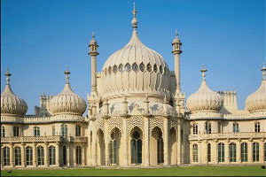
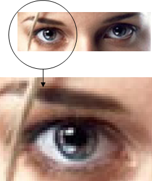
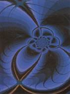

1. Компьютерлік графиканың түрлері
2. Үш өлшемді графика
Компьютерлік графикада бейнелену тәсіліне байланысты растрлық, векторлық және фракталдық графика болып бөлінеді. Обьектінің модулін тұрғызуда үш өлшемді графика жеке пән ретінде қарастырылады.
Компьютерлік графика үш түрге: растрлық, векторлық және фракталдық болып бөлінеді. Олар бір-бірінен монитор экранында бейнелену және қағаз бетіне басып шығарылған кезде кескіндердің қалыптасу принциптері бойынша ажыратылады.
|
 |
Растрлық графикада кескіндер түрлі-түсті нүктелердің жиынтығынан тұрады.Графикалық ақпараттың осындай нүктелер жиыны немесе пиксельдер түрінде ұсынылуы растрлық түрдегі ұсынылу болып табылады. Растрлық кескінді құрайтын әрбір пиксельдің өз орны мен түсі болады және әр пиксельге компьютер жадында бір ұяшық қажет.
Растрлық кескіннің сапасы сол кескіннің өлшеміне (тігінен және көлденең орналасқан пиксельдердің саны) және әр пиксельді бояуға қажетті түстердің санына тәуелді болады.
Мұндай типті кескіндер Adobe Photoshop, Corel Photo, Photofinish секілді қуатты графикалық редакторларда өңделеді. Растрлық кескіндер векторлық кескіндерге қарағанда сапасы жоғары, әсерлі болады. Қарапайым фотосуреттердің өзі компьютерде растрлық кескін түрінде сақталады. Растрлық кескіндерді Paint, Adobe Image Ready секілді программаларды қолданып қолдан жасауға да болады.
Растрлық кескіндердің артықшылықтары да, кемшіліктері де бар.
Растрлық графиканың артықшылығы:
· әр нүкте бір-бірінен тәуелсіз;
· бейнелік ақпаратты енгізудің автоматты техникалық түрде іске асырылуы. Мұндай құрылғыларға сканерлер, бейнекамералар, сандық фотокамералар және графикалық планшеттер жатады;
· фотомүмкіндігі. Тұман немесе түтін суреттерін және басқа да әсерлер алуға болады;
· файлдар форматы нүктелік бейнелерді сақтауға арналған және олар стандартты болып табылады;
· Web-дизайнды қолдануға болады.
|
 |
Растрлық графиканың кемшілігі:
· Растрлық бейнені бұруға, еңкейтуге болмайды. Егер бейнені кішкене ғана қисайтатын болсақ онда бейне шеттері түзу сызық емес «баспалдақ» болып қалады;
· Бейнені үлкейтіп анықтап көруге болмайды. Бейне нүктелерден тұрғандықтан, оны үлкейткенде нүктелер көлемі де үлкейеді. Бұдан бейненің сапасы нашарлайды;
· Бейнені үлкейткенде файлдың көлемі үлкейіп кетеді.
Бірақ бұл кемшіліктеріне қарамастан, қазіргі техникада растр өте жоғары сапалы кескін алуға мүмкіндік береді. Сондықтан растрлық кескіндер көркем графикада кеңінен қолданылады.
Растрлық графика электронды (мультимедиалық) және полиграфиялық басылымдарды жасап шығару үшін де жиі қолдылады. Растрлы графикалық редакторлар көбінесе жаңа суреттерді салу үшін емес, дайын суреттерді өңдеу үшін қолданылады. Осы мақсатта көбінесе суретшілердің қолымен салынған дайын суреттер сканерленіп алады немесе фотосуреттер алынады. Соңғы кездері растрлық кескіндерді компьютерге енгізу үшін сандық фотокамералар мен видеокамералар кеңінен қолданылуда.
|
|
Векторлық кескіндер, бұл - сызық, доға, шеңбер және тікбұрыш сияқты геометриялық объектілер жинағынан тұратын кескіндер. Бұл жерде вектор дегеніміз - осы объектілерді сипаттайтын мәліметтер жиынтығы.
Векторлық графиканың басты артықшылығы оған кескін сапасын жоғалтпай өзгеріс енгізуге, орай кішірейтуге және үлкейтуге болатындығы. Келесі артықшылығы - векторлық кескіндердің ақпараттық көлемі растрлық кескіндермен салыстырғанда әлдеқайда аз болады. Векторлық кескіндер СorelDRAW, Adobe illustrator, Micrografx Draw секілді векторлық графикалық редакторларда жасалады.
Векторлық графикамен жұмыс істеуге арналған программалық құралдар бірінші кезекте кескіндерді өңдеу үшін емес, оларды жаңадан салу үшін қолданылады. Бұндай құралдар жарнама агенттіктерінде, дизайнерлік бюроларда, редакциялар мен баспаханаларда кеңінен қолданылады. Қарапайым геометриялық объектілер мен қаріптерді пайдалануға негізделген безендіру жұмыстары векторлық графика құралдарының көмегімен әлдеқайда оңай іске асады.
|
 |
Фракталды графиканың жасалу әдісі сурет салуға немесе безендіруге емес,програмалауға негізделеді. Егер растрлық графикада растр (пиксель), ал векторлық графикада сызық базалық элемент болып табылса, фракталдық графикада математикалық формуланың өзі базалық элемент болып табылады, бұл компьютердің жадында ешқандай объект сақталмайды, кескін тек қана теңдік бойынша салынады деген сөз.
Үш өлшемді графика. Үш өлшемді графиканың негізі векторлық графика болып табылады. Мұнда бейнелер компьютер жадысында құраушы объектілер түрінде сақталады. Объект 3-өлшемді болуы үшін оның бетін каркастық құрылғы ретінде үш өлшемді координата x,y,z түрінде және кеңістіктегі түйіндік нүктелер арқылы тұрғызу қажет.
Растрлық, векторлық, үш өлшемді графика статистикалық және динамикалық болып бөлінеді.
Динамикалық үш өлшемді графика кинематографияда кеңінен қолданылады. Ал екі өлшемді графика x,y координатты графика мультфильмдерде және веб-беттерін өңдеуге қолданылады.